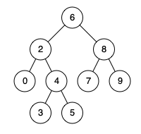

| Category | Difficulty | Likes | Dislikes |
|---|---|---|---|
| Algorithms | Medium | 12089 | 351 |
tree | depth-first-search | binary-search-tree | binary-tree
linkedin | amazon | google | facebook | bloomberg | microsoft | apple | yandex | twitter
Given a binary search tree (BST), find the lowest common ancestor (LCA) node of two given nodes in the BST.
According to the definition of LCA on Wikipedia: “The lowest common ancestor is defined between two nodes p and q as the lowest node in T that has both p and q as descendants (where we allow a node to be a descendant of itself).”
Example 1:

Input: root = [6,2,8,0,4,7,9,null,null,3,5], p = 2, q = 8
Output: 6
Explanation: The LCA of nodes 2 and 8 is 6.Example 2:
Input: root = [6,2,8,0,4,7,9,null,null,3,5], p = 2, q = 4
Output: 2
Explanation: The LCA of nodes 2 and 4 is 2, since a node can be a descendant of itself according to the LCA definition.Example 3:
Input: root = [2,1], p = 2, q = 1
Output: 2
Constraints:
[2, 105].-109 <= Node.val <= 109Node.val are unique.p != qp and q will exist in the BST.